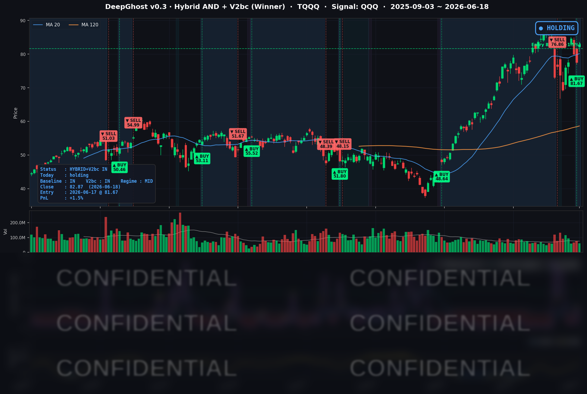

매파 연준 충격을 하루 만에 소화하고 반도체가 주도한 강세 랠리. 어제 마이너스로 출발했던 TQQQ가 하루 만에 플러스로 전환했습니다.
📊 오늘의 매매 신호
| 항목 | 내용 |
|---|---|
| 오늘 할 일 | ✅ 아무것도 안 해도 됩니다 |
| 포지션 상태 | 📈 TQQQ 보유 중 (IN POSITION) |
| 매수 진입일 | 2026-06-17 (보유 2일째) |
| 진입가 → 현재가 | $81.67 → $82.87 |
| 현재 포지션 수익 | +1.5% |
어제(6/17) 미국 장 개장과 함께 TQQQ 매수에 진입했습니다. 진입 첫날에는 오후 연준(FOMC) 발표 변동성으로 잠시 평가손실이 났지만, 오늘 하루 만에 플러스로 돌아섰습니다. 새로 매수하거나 매도할 신호는 없으니, 보유하고 계신 분은 그대로 유지하시면 됩니다.
TQQQ 시그널 — IN POSITION
현재 상태: 매수 포지션 유지 중 | 보유 포지션 수익 +1.5%

어제 마감 시점(-5.0%)에서 오늘 +1.5%로 약 6.5%포인트를 회복했습니다.
짧은 기간의 출렁임은 감내해야 하는 포지션이라는 점을 기억해 두시면 좋겠습니다. 현재 모델 기준으로는 청산을 가리키는 신호가 없어 보유를 유지합니다.
오늘 미국 시장 — 시황 요약
매파(긴축 선호) 연준을 하루 만에 소화하고, 반도체가 이끈 강한 위험선호 랠리가 펼쳐졌습니다. 나스닥과 소형주가 함께 오른 반면 다우는 제자리에 머물러, 성장주와 가치주의 온도 차가 뚜렷했던 하루입니다.
지수 마감
| 지수 | 종가 | 등락률 |
|---|---|---|
| S&P 500 | 7,500.58 | +1.08% |
| 나스닥 | 26,517.93 | +1.91% |
| 다우 | 51,564.70 | +0.14% |
| 러셀 2000 | 2,979.77 | +2.12% |
S&P 500이 7,500선을 회복하며 사상 최고권 부근으로 돌아왔습니다. 나스닥(+1.91%)이 다우(+0.14%)를 크게 앞섰고, 소형주를 대표하는 러셀 2000도 +2.12%로 강세에 동참했습니다. 상승의 무게추가 기술·성장주에 확실히 쏠린 하루였습니다.
국채 금리 동향
| 만기 | 수익률 | 변화 |
|---|---|---|
| 3개월 | 3.658% | +4.0bp |
| 10년 | 4.451% | -3.6bp |
| 30년 | 4.901% | -7.4bp |
단기 금리는 오르고 장기 금리는 내리는 흐름이었습니다. 매파 연준으로 정책금리 부담이 단기물에 반영된 반면, 장기물(10년·30년)에는 매수세가 들어오며 눌렸습니다. 장기 금리 하락은 미래 이익 비중이 큰 성장주·반도체의 밸류에이션에 우호적으로, 오늘 나스닥 강세를 뒷받침한 배경입니다. 10년물에서 3개월물을 뺀 장단기 차이는 +79.3bp로 정상적인 우상향 곡선을 유지하고 있습니다.
연준 발언 & 금리 패스
신임 케빈 워시(Kevin Warsh) 의장의 첫 회의였던 6월 FOMC는 기준금리를 3.50~3.75%로 동결했습니다(3회 연속). 다만 표결은 8 대 4로 갈렸고, 점도표에서 2026년 남은 인하 전망이 삭제되면서 연말 금리 중간값이 3.4%에서 3.8%로 상향됐습니다. 시장은 이를 매파적으로 해석했고, 선물시장에서는 연내 추가 인상 가능성이 약 66%까지 올라왔습니다. 결정 자체는 어제(6/17) 이미 반영됐고, 오늘은 불확실성 해소 + 반도체 호재가 매파 부담을 압도하는 모습이었습니다.
오늘의 핵심 이슈
- 인텔 +10.64% 폭등 — 애플이 자사 칩 일부를 인텔 파운드리에서 미국 내 생산한다는 소식이 전해지며, 인텔의 파운드리 사업 반등 기대가 폭발했습니다.
- 마이크론 +8.70% — 2026년 HBM(고대역폭 메모리) 생산 물량이 전량 매진됐다는 소식과 6/24 실적 발표 기대가 메모리 슈퍼사이클 베팅을 자극했습니다.
- 퀄컴 +6.17%, 브로드컴 +4.70% — AI 데이터센터 모멘텀과 6/24 인베스터 데이 기대(퀄컴), 채무 바이백 확대 발표(브로드컴)가 반도체 전반으로 매수세를 넓혔습니다.
변동성 & 투자심리
- VIX(변동성 지수): 16.40 (전일 18.44 → -11.06%). 매파 연준 이벤트를 통과하자 공포가 빠르게 진정됐습니다.
- 공포·탐욕 지수: 37 (공포 구간). VIX가 진정됐는데도 심리 지표는 여전히 '공포'에 머물러, 매파 연준과 높은 물가에 대한 경계감이 아직 시장 저변에 남아 있음을 보여줍니다.
가격과 VIX는 강한 위험선호를 가리키지만, 공포·탐욕 지수는 여전히 '공포'입니다. 단기 안도감과 기저의 경계감이 공존하는 국면으로, 하루의 랠리만으로 추세 전환을 단정하기는 이릅니다.
매크로 & 원자재
- 유가: WTI $75.46 (-1.73%), 브렌트 $79.28 (-0.34%)
- 금: $4,226.80 (-3.03%)
위험선호가 살아나면서 안전자산인 금이 -3% 급락했고, 유가도 소폭 후퇴했습니다. 둘 다 오늘의 위험선호 랠리와 결이 맞는 흐름입니다. 참고로 5월 소비자물가(CPI)는 연 4.2%로 2023년 4월 이후 최고치를 기록했는데, 이는 매파 연준의 핵심 배경이기도 합니다.
주요 종목 동향
| 종목 | 전일 종가 | 당일 종가 | 등락률 | 비고 |
|---|---|---|---|---|
| INTC | 121.10 | 133.99 | +10.64% | 애플-인텔 미국 칩 제조 파트너십 |
| MU | 1,043.19 | 1,133.99 | +8.70% | 2026 HBM 전량 매진, 6/24 실적 기대 |
| QCOM | 212.97 | 226.11 | +6.17% | 6/24 인베스터 데이·AI 데이터센터 기대 |
| AVGO | 392.90 | 411.35 | +4.70% | 채무 바이백 확대 발표 |
| NVDA | 204.65 | 210.69 | +2.95% | 반도체 섹터 동반 강세 |
| AMZN | 237.50 | 244.39 | +2.90% | 빅테크 위험선호 매수 |
| META | 567.58 | 577.22 | +1.70% | 성장주 강세 동참 |
| GOOGL | 363.79 | 368.03 | +1.17% | 성장주 강세 동참 |
| TSLA | 396.38 | 400.49 | +1.04% | $400 회복 |
| AAPL | 295.95 | 298.01 | +0.70% | 인텔 파운드리 협력 주체 |
| NFLX | 76.96 | 77.38 | +0.55% | 시장 대비 완만 |
| MSFT | 378.91 | 379.40 | +0.13% | 빅테크 중 가장 부진(사실상 보합) |
반도체 4인방(인텔·마이크론·퀄컴·브로드컴)이 등락률 상위를 독식했습니다. AI 인프라, 메모리 슈퍼사이클, 파운드리 반등이라는 세 가지 테마가 동시에 점화된 강세일이었습니다.
Ghost.AI — Quantitative AI Investment
Model: DeepGhost v0.3 | Transformer-Based Deep Learning
Coverage: 13 tickers | Updated every trading day after US market close
⚠️ 본 자료는 정보 제공 목적으로만 작성되었으며 투자 권유가 아닙니다. 모든 투자의 책임은 투자자 본인에게 있습니다. 과거 성과가 미래 수익을 보장하지 않습니다.
[유의사항]
- 본 서비스는 불특정 다수를 대상으로 발행되는 단방향 정보 제공 서비스이며, 투자자 개인의 재산 상황·투자 목적·위험 선호도를 반영한 개별 투자 조언이 아닙니다.
- 고스트에이아이 주식회사는 고객과 쌍방향 의사소통(개별 상담, 맞춤형 자문 등)을 제공하지 않습니다.
- 본 콘텐츠는 투자 권유 또는 매매 주문의 청약·청약의 권유에 해당하지 않으며, 최종 투자 판단 및 그에 따른 손익의 책임은 전적으로 투자자 본인에게 있습니다.
고스트에이아이 주식회사